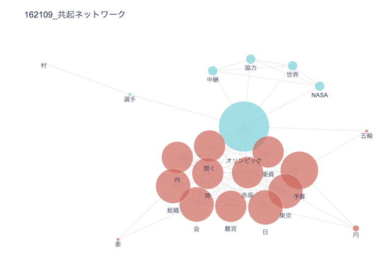

２つのオリンピック テキストマイニング
2020年
- 共起ネットワーク
- サンバースト

- 単語頻出
1964年
- 共起ネットワーク

- サンバースト

- 単語頻出
分析
- 2020年の方が全体的に単語の種類が多い。
- 新型コロナウイルスの影響で2020年の方はコロナ関連の単語が多い。
- ”パラリンピック”という単語が1964年には無く、2020年にはあることから、
パラリンピックがどんどん注目されるようになってきているということがわかる。
また、障害を持つ方々との共生社会が進んでいるのだと考えられる。
- どちらにも”予算”という単語があることから、オリンピックの予算についての世間の関心が高いと考えられる。
- 1964年に比べ2020年では”公費” ”経費” ”収入” ”費” ”削減” ”支出”などお金に関する単語が多い。
これらのことから、2020年オリンピックではお金にまつわる報道が多かったと言える。
- 2020年では、”会長” ”理事” ”都知事” など役職の単語がある。
このことから、オリンピックでの汚職問題、問題発言が多く取り上げられていたことがわかる。